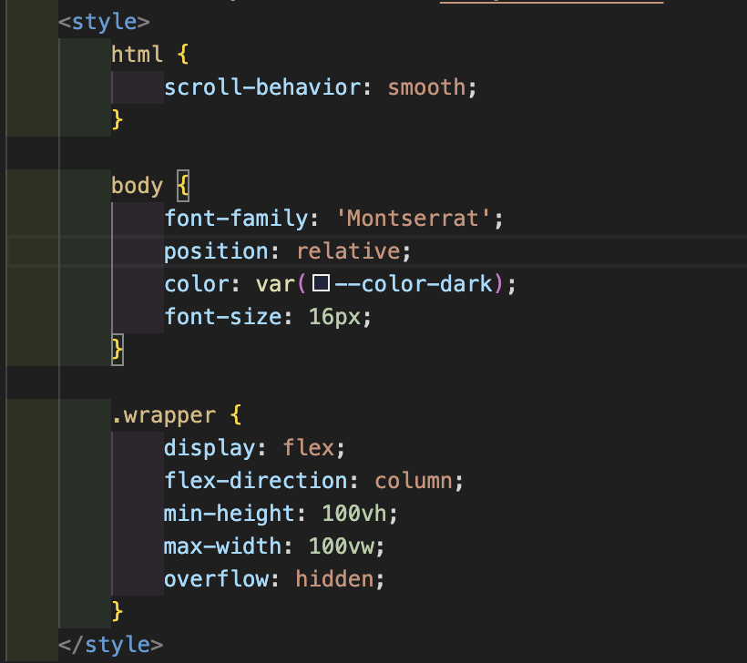
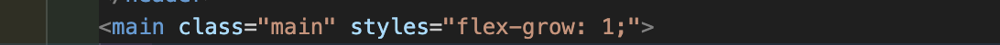
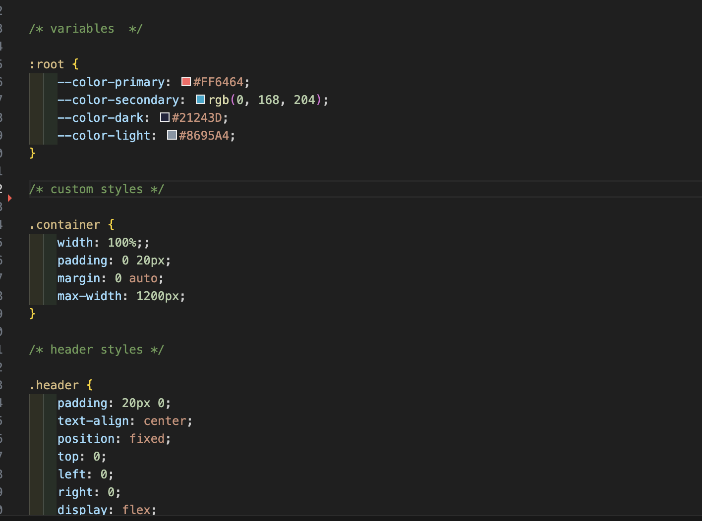

Тема:
Для виконання лабораторної роботи обрана тема "Особистий веб-сайт веб-розробника (сайт-візитка)". Веб-сторінка створена для попереднього ознайомлення з роботами розробника, його досвідом, а також контакти для звʼязку. За основу був взятий готовий дизайн, створений користувачем Figma Community.
Мета роботи:
Ознайомитися з основами HTML, вивчити теги, семантичну верстку. Навчитися правильно організовувати структуру html-документа. Також навчитися користуватися системою контролю версій Git та платформою GitHub для збереження та відстеження змін у коді. Навчитися працювати в інтегрованому середовищі розробки (IDE) Visual Studio Code.
Місце розташування веб-сторінки:
Веб-сторінка розташована на платформі GitHub Pages за посиланням: https://sukachovaoy-zpi51-lgtm.github.io/IP-zp51_appWEB_SukachovaOlha-F2-2025/.
Посилання на живу сторінку звітного (поточного) документа: https://sukachovaoy-zpi51-lgtm.github.io/IP-zp51_appRECORD_SukachovaOlha-F2-2025/.
Посилання на репозиторій з кодом веб-сторінки: github.com/sukachovaoy-zpi51-lgtm/IP-zp51_appWEB_SukachovaOlha-F2-2025.
Посилання на репозиторій звітного документа: github.com/sukachovaoy-zpi51-lgtm/IP-zp51_appRECORD_SukachovaOlha-F2-2025.
Опис предметного середовища:
Веб-сторінка є особистим сайтом веб-розробника, який надає інформацію про себе, свої навички, досвід роботи та контакти для звʼязку. Сайт має сучасний дизайн, зручну навігацію та адаптивність для різних пристроїв.
Опис бізнес-логіки:
Веб-сторінка створена з метою представлення особистого бренду веб-розробника, залучення потенційних клієнтів або роботодавців. Вона містить розділи з інформацією про навички, портфоліо робіт та контактні дані. Користувачі можуть легко знайти необхідну інформацію та звʼязатися з розробником через форму зворотного звʼязку або вказані контакти.
Структура документа:
HTML-документ складається з основних секцій: head та body. В body розміщені основні візуальні елементи сторінки, які бачить користувач:
header, головний контент main та підвал footer. У хедері розміщене навігаційне меню. Основний контент містить 4 секції: головна (так звана hero section), про мене, портфоліо та контакти. Підвал містить інформацію про авторські права.
В сучасній веб-розробці прийнято використовувати так звану блочну модель верстки, де кожен розділ сторінки є окремим блоком з власними стилями та поведінкою. Це дозволяє легко керувати зовнішнім виглядом та функціональністю сторінки. Також використані семантичні теги HTML5, які покращують доступність та SEO оптимізацію сторінки.
Це, зокрема, теги header, nav, section, article та footer.
Тема:
Використання CSS для стилізації веб-сторінки
Мета роботи:
Придбати практичні навички роботи з селекторами, ідентифікаторами, класами в CSS. Навчитися підключати CSS-стилі до HTML-документу різними способами: внутрішні стилі, зовнішні стилі та інлайн-стилі. Ознайомитися з основними властивостями CSS для стилізації тексту, блоків, посилань та інших елементів сторінки.
Місце розташування веб-сторінки:
Веб-сторінка розташована на платформі GitHub Pages за посиланням: https://sukachovaoy-zpi51-lgtm.github.io/IP-zp51_appWEB_SukachovaOlha-F2-2025/.
Посилання на живу сторінку звітного (поточного) документа: https://sukachovaoy-zpi51-lgtm.github.io/IP-zp51_appRECORD_SukachovaOlha-F2-2025/.
Посилання на репозиторій з кодом веб-сторінки: github.com/sukachovaoy-zpi51-lgtm/IP-zp51_appWEB_SukachovaOlha-F2-2025.
Посилання на репозиторій звітного документа: github.com/sukachovaoy-zpi51-lgtm/IP-zp51_appRECORD_SukachovaOlha-F2-2025.
Способи підключення CSS-стилів
Відомі три основні способи підключення CSS-стилів до HTML-документу:
- Внутрішні стилі (Internal CSS): Стилі визначаються всередині тегу
<style>у секції<head>HTML-документу. Цей спосіб зручний для застосування стилів до однієї сторінки. - Зовнішні стилі (External CSS):> Стилі зберігаються у окремому файлі з розширенням .css, який підключається до HTML-документу за допомогою тегу
<link>у секції<head>. Цей спосіб дозволяє використовувати один файл стилів для кількох сторінок, що полегшує підтримку та оновлення стилів. - Інлайн-стилі (Inline CSS): Стилі застосовуються безпосередньо до окремого HTML-елементу за допомогою атрибуту
style. Цей спосіб використовується для швидкого застосування стилю до одного елемента, але не рекомендується для великих проектів через складність підтримки.
У цій лабораторній роботі були використані всі три способи підключення CSS-стилів для демонстрації їх роботи та ефективності в різних ситуаціях.
Internal
Inline
External
CSS селектори
Селектори в CSS використовуються для вибору HTML-елементів, до яких будуть застосовані стилі. Існує кілька типів селекторів: селектор елемента, класу, ідентифікатора, атрибуту, псевдокласу та псевдоелемента. Наприклад, селектор класу використовується для вибору всіх елементів з певним класом, тоді як селектор ідентифікатора вибирає лише один унікальний елемент з відповідним ID. Псевдокласи дозволяють стилізувати елементи в залежності від їх стану (наприклад, при наведенні курсору), а псевдоелементи використовуються для стилізації частин елементів (наприклад, перша літера тексту). Для вибору елементів можна комбінувати селектори, створюючи складніші правила стилізації.
Різні селектори мають різний рівень специфічності, що впливає на те, які стилі будуть застосовані, якщо кілька правил конфліктують між собою. Наприклад, селектор ідентифікатора має вищу специфічність, ніж селектор класу, тому стилі, визначені для ID, переважатимуть над стилями для класу. Найменш специфічними є селектори елементів (тегів).
Найвищу специфічність має правило з використанням !important, яке примусово застосовує стиль незалежно від інших правил. Рекомендується уникати надмірного використання !important, оскільки це ускладнює підтримку коду. Розуміння роботи селекторів є ключовим для ефективного використання CSS у веб-розробці.
Висновки
В ході виконання лабораторної роботи були вивчені основні способи підключення CSS-стилів до HTML-документу: внутрішні стилі, зовнішні стилі та інлайн-стилі. Кожен з цих способів має свої переваги та недоліки, і вибір залежить від конкретних вимог проекту. Також були розглянуті різні типи селекторів в CSS, їх специфічність та застосування для ефективної стилізації веб-сторінок. Отримані знання дозволять більш впевнено працювати з CSS у майбутніх веб-проектах.
Зокрема, в даній роботі в основному було застосовано зовнішній спосіб підключення CSS-стилів, що дозволило централізовано керувати стилями та забезпечити їх повторне використання на різних сторінках веб-сайту.
Релізовано "прилипання" навігаційного меню при прокрутці сторінки, що покращує користувацький досвід. Навігація по сторінці забезпечується за допомогою внутрішніх посилань, що дозволяє швидко переходити до різних секцій сторінки.
Плавність перехідів між секціями сторінки реалізована за допомогою CSS-властивості scroll-behavior: smooth;, що робить прокрутку більш приємною для користувача.
Для оптимізації відображення сторінки на різних пристроях були використані медіа-запити (media queries), що дозволяє адаптувати дизайн під різні розміри екранів, забезпечуючи кращу доступність та зручність використання сайту на мобільних пристроях. Так, зокрема, було реалізовано адаптивне меню для мобільних пристроїв, яке спрощує навігацію на менших екранах. Крім цього, були застосовані різні CSS-властивості для покращення візуального вигляду сторінки, такі як тіні, анімації при наведенні курсору на елементи, а також стилізація форм та кнопок для покращення взаємодії з користувачем.
Також для забезпечення адаптивності сторінки були використані відносні одиниці виміру, такі як відсотки (%) у взаємодії з flexbox (CSS Flexible Box Layout) - CSS модуль, який дозволяє автоматично організовувати відповідні елементи в контейнері залежно від розміру екрана (або пристрою) та дає змогу використовувати більш ефективний спосіб верстки, вирівнювання й розподілу вільного місця між елементами у контейнері, навіть коли їх розмір невідомий і/або динамічний. Це дозволяє елементам сторінки забезпечувати кращу доступність та зручність використання сайту на різних пристроях.
Загалом, виконана робота дозволила отримати практичні навички роботи з CSS, які будуть корисними для подальшої веб-розробки.